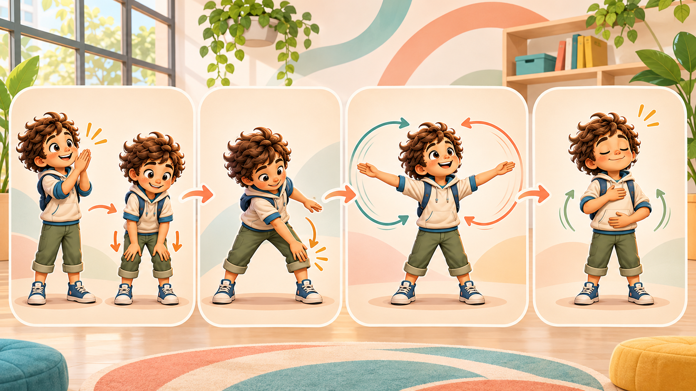

Mover · conectar · pausar
Cuerpo y despertar neuronal
Rutinas visuales breves para activar ambos lados del cuerpo antes de aprender. No se mide rapidez ni perfección: cada persona adapta el movimiento.
Elegir una rutina
Primero, comodidad y seguridad
Deja espacio alrededor. Si algo incomoda, duele o marea, detén la actividad y avisa a una persona adulta. También puedes hacer los gestos sentado o solo imaginarlos.
Nueva sección · 4 pasos
Despertar neuronal
Una secuencia breve para conectar ritmo, cruce, coordinación y una pausa final. No busca cansar ni medir rapidez.

8 experiencias ilustradas
Elige cómo despertar
Las dos primeras experiencias son libres. Las demás pertenecen a Familia Plus.
Para acompañar sin comparar
Observa si la persona pidió una pausa, cambió el tamaño del movimiento o encontró un ritmo cómodo. Eso describe esta experiencia; no demuestra coordinación general ni reemplaza una evaluación profesional.